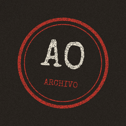

EL ARCHIVO OCULTO
Qué es
El Archivo Oculto es un canal de YouTube de divulgación sobre misterios reales de la historia: desapariciones, lugares olvidados, objetos enigmáticos y documentos que siguen sin explicación. Cada vídeo es un "expediente" numerado.
Cómo trabajamos
- Cada caso se investiga y se contrasta con al menos dos fuentes, que se citan en la descripción del vídeo.
- Separamos los hechos documentados de los testimonios y de las teorías.
- Las imágenes proceden de Wikimedia Commons con licencias libres y se acreditan en cada vídeo.
- La narración usa una voz sintética. Los guiones y el montaje se producen con ayuda de herramientas de inteligencia artificial.